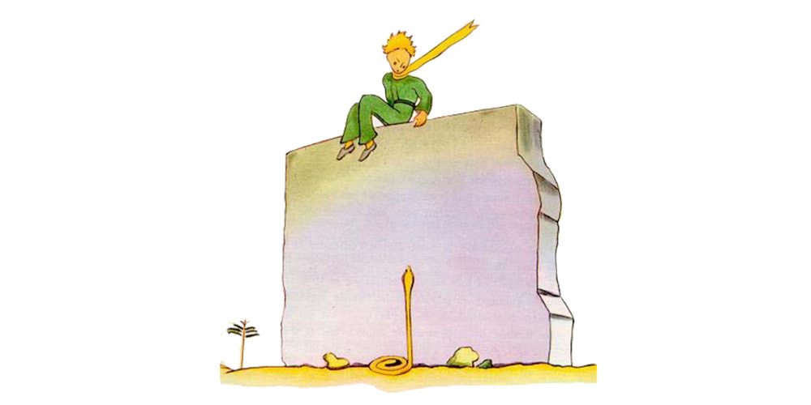
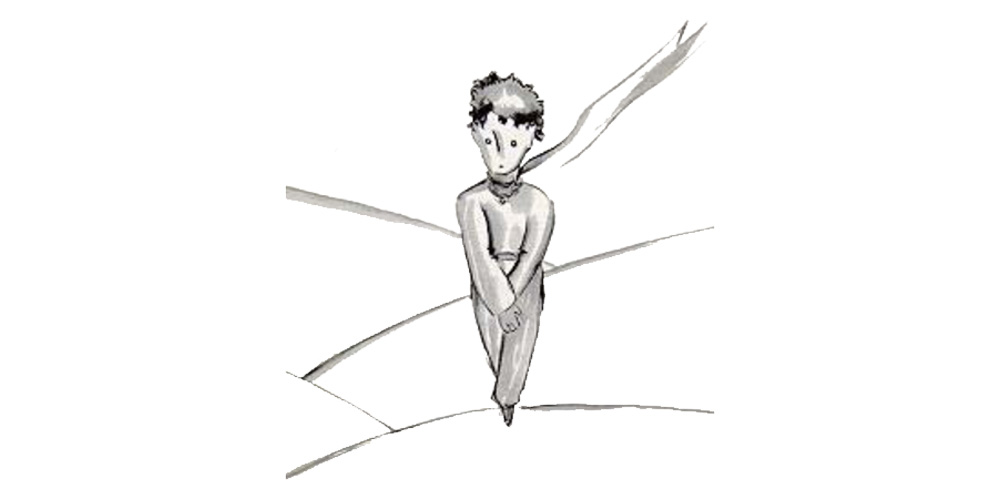
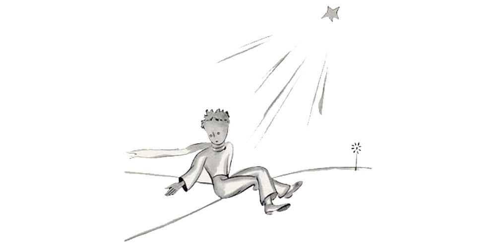
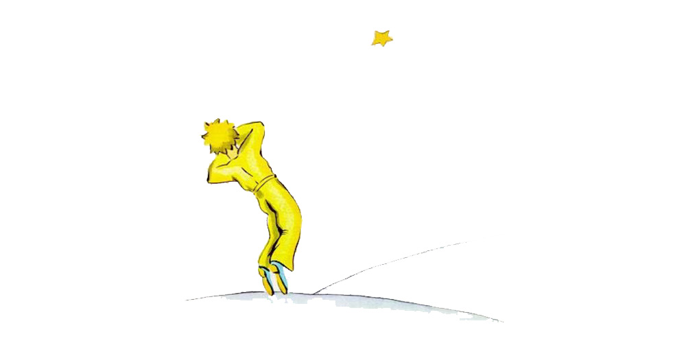

Chapter 26
Beside the well there was the ruin of an old stone wall. When I came back from my work, the next evening, I saw from some distance away my little price sitting on top of a wall, with his feet dangling. And I heard him say: "Then you don't remember. This is not the exact spot."
Another voice must have answered him, for he replied to it:
"Yes, yes! It is the right day, but this is not the place."
I continued my walk toward the wall. At no time did I see or hear anyone. The little prince, however, replied once again:
"−−Exactly. You will see where my track begins, in the sand. You have nothing to do but wait for me there. I shall be there tonight."
I was only twenty metres from the wall, and I still saw nothing.
After a silence the little prince spoke again:
"You have good poison? You are sure that it will not make me suffer too long?"
I stopped in my tracks, my heart torn asunder; but still I did not understand.
"Now go away," said the little prince. "I want to get down from the wall."

I dropped my eyes, then, to the foot of the wall−− and I leaped into the air. There before me, facing the little prince, was one of those yellow snakes that take just thirty seconds to bring your life to an end. Even as I was digging into my pocked to get out my revolver I made a running step back. But, at the noise I made, the snake let himself flow easily across the sand like the dying spray of a fountain, and, in no apparent hurry, disappeared, with a light metallic sound, among the stones.
I reached the wall just in time to catch my little man in my arms; his face was white as snow.
"What does this mean?" I demanded. "Why are you talking with snakes?"
I had loosened the golden muffler that he always wore. I had moistened his temples, and had given him some water to drink. And now I did not dare ask him any more questions. He looked at me very gravely, and put his arms around my neck. I felt his heart beating like the heart of a dying bird, shot with someone's rifle...
"I am glad that you have found what was the matter with your engine," he said.
"Now you can go back home−−"
"How do you know about that?"
I was just coming to tell him that my work had been successful, beyond anything that I had dared to hope.
He made no answer to my question, but he added:
"I, too, am going back home today..."
Then, sadly−−
"It is much farther... it is much more difficult..."
I realised clearly that something extraordinary was happening. I was holding him close in my arms as if he were a little child; and yet it seemed to me that he was rushing headlong toward an abyss from which I could do nothing to restrain him...
His look was very serious, like some one lost far away.
"I have your sheep. And I have the sheep's box. And I have the muzzle..."
And he gave me a sad smile.
I waited a long time. I could see that he was reviving little by little.
"Dear little man," I said to him, "you are afraid..."
He was afraid, there was no doubt about that. But he laughed lightly.
"I shall be much more afraid this evening..."
Once again I felt myself frozen by the sense of something irreparable. And I knew that I could not bear the thought of never hearing that laughter any more. For me, it was like a spring of fresh water in the desert.
"Little man," I said, "I want to hear you laugh again."
But he said to me:
"Tonight, it will be a year... my star, then, can be found right above the place where I came to the Earth, a year ago..."
"Little man," I said, "tell me that it is only a bad dream−− this affair of the snake, and the meeting−place, and the star..."
But he did not answer my plea. He said to me, instead: "The thing that is important is the thing that is not seen..."
"Yes, I know..."
"It is just as it is with the flower. If you love a flower that lives on a star, it is sweet to look at the sky at night. All the stars are a−bloom with flowers..."
"Yes, I know..."
"It is just as it is with the water. Because of the pulley, and the rope, what you gave me to drink was like music. You remember−− how good it was."
"Yes, I know..."
"And at night you will look up at the stars. Where I live everything is so small that
I cannot show you where my star is to be found. It is better, like that. My star will just be one of the stars, for you. And so you will love to watch all the stars in the heavens... they will all be your friends. And, besides, I am going to make you a present..."
He laughed again.
"Ah, little prince, dear little prince! I love to hear that laughter!"
"That is my present. Just that. It will be as it was when we drank the water..."
"What are you trying to say?"
"All men have the stars," he answered, "but they are not the same things for different people. For some, who are travelers, the stars are guides. For others they are no more than little lights in the sky. For others, who are scholars, they are problems . For my businessman they were wealth. But all these stars are silent. You−− you alone−− will have the stars as no one else has them−−"
"What are you trying to say?"
"In one of the stars I shall be living. In one of them I shall be laughing. And so it will be as if all the stars were laughing, when you look at the sky at night... you−− only you−− will have stars that can laugh!"
And he laughed again.
"And when your sorrow is comforted (time soothes all sorrows) you will be content that you have known me. You will always be my friend. You will want to laugh with me. And you will sometimes open your window, so, for that pleasure... and your friends w ill be properly astonished to see you laughing as you look up at the sky! Then you will say to them, 'Yes, the stars always make me laugh!' And they will think you are crazy. It will be a very shabby trick that I shall have played on you..."
And he laughed again.
"It will be as if, in place of the stars, I had given you a great number of little bells that knew how to laugh..."
And he laughed again. Then he quickly became serious:
"Tonight−− you know... do not come," said the little prince.
"I shall not leave you," I said.
"I shall look as if I were suffering. I shall look a little as if I were dying. It is like that. Do not come to see that. It is not worth the trouble..."
"I shall not leave you."
But he was worried.
"I tell you−− it is also because of the snake. He must not bite you. Snakes−− they are malicious creatures. This one might bite you just for fun..."
"I shall not leave you."
But a thought came to reassure him:
"It is true that they have no more poison for a second bite."

That night I did not see him set out on his way. He got away from me without making a sound. When I succeeded in catching up with him he was walking along with a quick and resolute step. He said to me merely:
"Ah! You are there..."
And he took me by the hand. But he was still worrying.
"It was wrong of you to come. You will suffer. I shall look as if I were dead; and that will not be true..."
I said nothing.
"You understand... it is too far. I cannot carry this body with me. It is too heavy."
I said nothing.
"But it will be like an old abandoned shell. There is nothing sad about old shells..."
I said nothing.
He was a little discouraged. But he made one more effort:
"You know, it will be very nice. I, too, shall look at the stars. All the stars will be wells with a rusty pulley. All the stars will pour out fresh water for me to drink..."
I said nothing.
"That will be so amusing! You will have five hundred million little bells, and I shall have five hundred million springs of fresh water..."
And he too said nothing more, because he was crying...
"Here it is. Let me go on by myself."

And he sat down, because he was afraid. Then he said, again:
"You know−− my flower... I am responsible for her. And she is so weak! She is so naïve! She has four thorns, of no use at all, to protect herself against all the world..."
I too sat down, because I was not able to stand up any longer.
"There now−− that is all..."
He still hesitated a little; then he got up. He took one step. I could not move.
There was nothing but a flash of yellow close to his ankle. He remained motionless for an instant. He did not cry out. He fell as gently as a tree falls. There was not even any sound, because of the sand.
